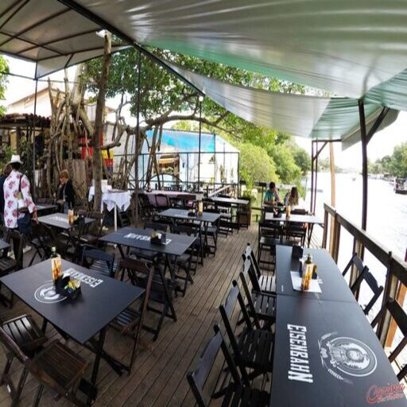
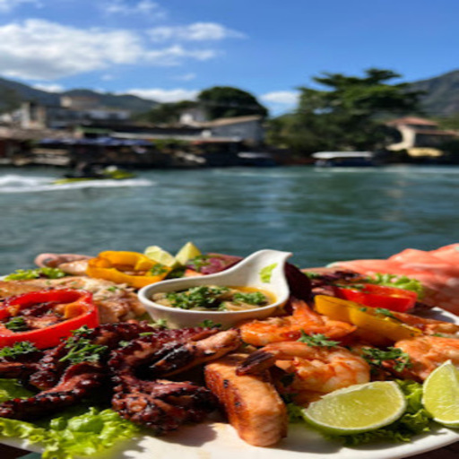
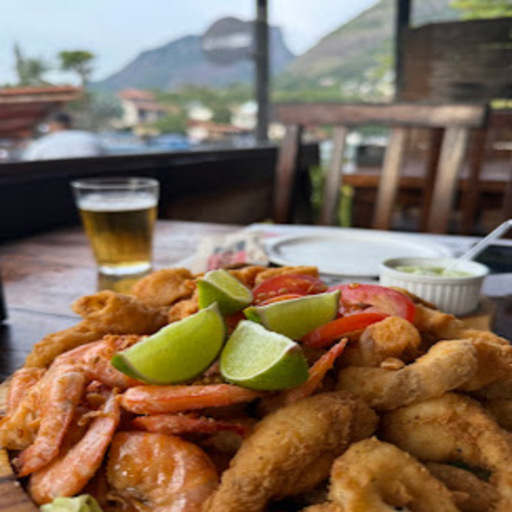
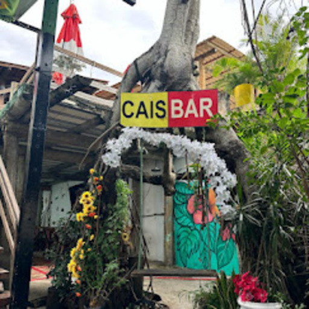
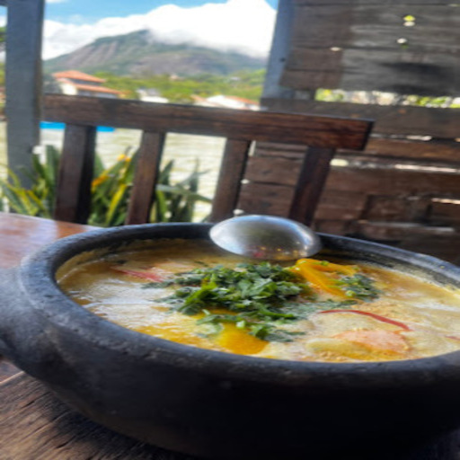
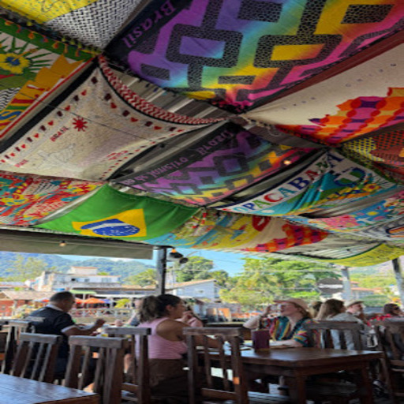
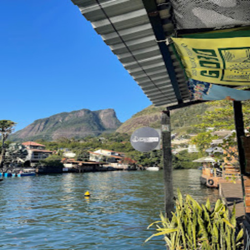

🍤 Tradição & Sabor
Cais Bar
Tradição, clima descontraído e a melhor moqueca à beira da lagoa.

Dica do Capi:
📸 Conheça o Espaço








O Cais Bar é um dos restaurantes mais antigos da Ilha da Gigóia, uma ótima opção para quem quer aproveitar a gastronomia da região em um ambiente descontraído à beira da lagoa.
A casa tem como destaque a culinária voltada para frutos do mar, com pratos preparados com ingredientes frescos e sabores típicos da região.
🐟 Especialidades da Casa
- Moqueca de Peixe: Uma das opções mais elogiadas, muito procurada por quem visita o restaurante em busca de uma refeição completa, farta e saborosa.
- Pratos Executivos: Servidos durante a semana, são ideais para quem quer almoçar muito bem enquanto aproveita a tranquilidade e a brisa da ilha.
- Rodízio de Petiscos: Com bebida liberada! É o atrativo perfeito para grupos de amigos que querem relaxar, experimentar de tudo e curtir o ambiente sem pressa.
Com boa comida, clima descontraído e vista para os canais da lagoa, o Cais Bar é mais um dos pontos gastronômicos que fazem da Ilha da Gigóia um destino especial para passar o dia.